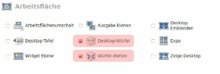
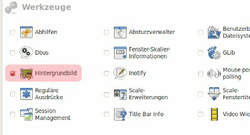
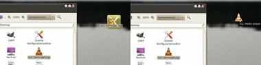
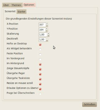

Multihintergründe für Desktopwürfel
Archivierte Anleitung
Dieser Artikel wurde archiviert, da er - oder Teile daraus - nur noch unter einer älteren Ubuntu-Version nutzbar ist. Diese Anleitung wird vom Wiki-Team weder auf Richtigkeit überprüft noch anderweitig gepflegt. Zusätzlich wurde der Artikel für weitere Änderungen gesperrt.
Achtung!
Dies ist eine Wiki für eine provisorische Lösung in der Gnome-Umgebung. Es ist keine offizielle oder bewährte Lösung. Es werden Einstellungen vorgenommen, durch die bestimmte Funktionen des Ubuntu Desktops verloren gehen!
Zum Verständnis dieses Artikels sind folgende Seiten hilfreich:
Seit längerem kursieren in diversen Linuxforen die Diskussionen um die Mulitwallpaperfunktion in Compiz. Die ermöglicht es, für jede Arbeitsfläche auf dem Desktopwürfel ein eigenes Hintergrundbild zu verwenden. An und für sich ist das eine sehr schöne Funktion, wenn da nicht ein Haken wäre: Gnome 2.30 unterstützt verschiedene Hintergrundbilder für die Arbeitsflächen eines Desktops nicht. Außerdem wird der Desktop und damit auch dessen Hintergrund in Ubuntu standardmäßig von dem Dateibrowser Nautilus verwaltet. Die Anzeige des Desktops über Nautilus muss also abgeschaltet werden, damit Compiz die Wallpaperanzeige übernehmen kann. Deaktiviert man Nautilus als Desktop-Zeichner, verschwinden allerdings auch die Desktop-Icons. Dieser Artikel soll zeigen, wie man zumindest die Verknüpfungen zu Programmen und Ordnern wiederherstellen (simulieren) kann.
Hinweis:
Verknüpfungen für gemountete Laufwerke auf dem Desktop bleiben nicht erhalten! (zumindest mit der hier beschriebenen Vorgehensweise). Wer sich von dieser Funktion nicht verabschieden möchte, muss sich leider von der Multi-Wallpaper Idee verabschieden und kann hier gleich aufhören zu lesen.
Paketinstallation¶
Benötigt werden Compiz und dessen Einstellungsmanager(CCSM) sowie die Widget-Engine Screenlet. Falls Compiz nicht schon standardmäßig in der Distribution installiert ist, muss nur der Einstellungsmanager installiert werden. Compiz und Screenlets befindet sich in den offiziellen Paketquellen von Ubuntu, der CCSM in dessen universe Sektion.
compiz (möglicherweise bereits in Distribution erhalten)
compiz-gnome (optional, für den GNOME-Desktop)
compiz-fusion-plugins-main
compiz-fusion-plugins-extra (universe seit Lucid, optional)
compizconfig-settings-manager (universe)
screenlets
 mit apturl
mit apturl
Paketliste zum Kopieren:
sudo apt-get install compiz compiz-gnome compiz-fusion-plugins-main compiz-fusion-plugins-extra compizconfig-settings-manager screenlets
sudo aptitude install compiz compiz-gnome compiz-fusion-plugins-main compiz-fusion-plugins-extra compizconfig-settings-manager screenlets
Compiz Würfel konfigurieren¶
Die Einrichtung von Compiz wird hier beschrieben: Compiz
Zunächst "System" -> "Einstellungen" -> "CompizConfig Einstellungs-Manager" aufrufen und in die Kategorie "Arbeitsplatz" gehen.
Alternativ lässt sich der CompizConfig Einstellungs-Manager (CCSM) auch über das Terminal starten:
ccsm

Es müssen die Erweiterungen "Desktop-Würfel" und "Würfel-Drehen" im CCSM aktiviert werden. Außerdem sollte sichergestellt werden, dass die "Widget Ebene" nicht eingeschaltet ist.
Eingehende Erklärungen zu den Erweiterungen und deren Einstellungsmöglichkeiten können im Wiki abgerufen werden: CompizConfig Einstellungs-Manager. Die Standardeinstellungen genügen hier aber.
Hinweis:
Ubuntus Arbeitsflächenumschalter hat standardmäßig zwei Arbeitsflächen aktivert (Einstellbar in der rechten Ecke des unteren Panels. Diese Anleitung lässt sich auch für 2 Arbeitsflächen anwenden, diese funktionieren dann wie eine zweiseitge, rotierbare Tafel. Um allerdings einen drehbaren Würfel zu erhalten, müssen vier Arbeitsflächen aktiviert sein.
Nautilus Desktop abschalten¶
Um später die über Compiz eingestellten Wallpaper auf der Entsprechenden Arbeitsfläche dann auch zu sehen, muss zuerst noch die Desktopverwaltung von Nautilus abgeschaltet werden.
Um den Konfigurationseditor zu starten, muss man das Terminal bemühen:
gconf-editor
Über "apps" -> "nautilus" -> "preferences" kommt man an die Einstellung, die Verändert werden soll.
Um den von Nautilus gezeichneten Desktop abzuschalten muss nun bei der Einstellung "show_desktop" der Haken entfernt werden.
Achtung!
Wenn Nautilus den Desktop nicht mehr zeichnet, sind keine Desktopsymbole mehr sichtbar. Verknüpfungen, auf dem Desktop gespeicherte Dateien und eingehängte Laufwerke werden nun nicht mehr angezeigt! Ebenso wird das Kontextmenu des Desktops deaktiviert. Alle Desktopinhalte bleiben, bis auf dynamische Laufwerksverknüpfungen, natürlich im Desktopordner und können dort bearbeitet werden.
Zunächst soll die Einstellung jedoch noch aktiviert bleiben, sie wird für die Ersatz-Desktopsymbole noch gebraucht. Den Gnome Konfigurationseditor also vorerst minimieren.
Hintergründe setzen¶
 Jetzt können die Hintergrundbilder ihren jeweiligen Arbeitsflächen zugewiesen werden. Dazu wechselt man im CCSM in die Kategorie "Werkzeuge". Hier ist die Erweiterung "Hintergrundbild" zu aktivieren. In den Einstellungen dieser Erweiterung befindet sich eine Liste, die zu Beginn noch leer ist. Mit Neu wird ein Hintergrundbild angelegt. Entsprechend der Reihenfolge in der Liste werden die Hintergründe auf die Arbeitsflächen gezeichnet. Das erste Bild kommt also auf Arbeitsfläche 1, das zweite auf Arbeitsfläche 2 usw.. Für die Hintergründe kann zudem noch die Art der Skalierung eingestellt werden. Die restlichen Standardeinstellungen können unverändert bleiben.
Hinweis:
Die Liste der Hintergründe ist beliebig erweiterbar und kann somit immer auf die verwendete Anzahl von Arbeitsflächen angepasst werden.
Desktop Symbole wiederherstellen¶
Die Widgetengine Screenlets ("Zubehör" -> "Screenlets") verfügt über ein Widget Namens Launcher. Dieses Launcher-Widget funktioniert im Grunde wie ein normaler Starter auf dem Desktop oder im Start-Menü und soll nun als Ersatz für die eigentlichen Symbole dienen. Der Unterschied zu den Originalsymbolen ist der fehlende Text. Er wird aber als Mouseover-Text angezeigt. Außerdem startet bereits ein einmaliger Mausklick die Anwendung. Die Konfiguration ist recht einfach: Die Verknüpfung, die man als Starter haben möchte, kann per Drag & Drop auf das Launcher Symbol gezogen werden.  Dabei wird der Verknüpfungspfad ins Launcher-Widget kopiert. Praktischerweise können somit die Symbole auf dem Desktop einfach als Launcher dupliziert werden, in dem man für jede Verknüpfung ein Launcher-Widget startet und es per D&D anpasst. Das gleiche gilt auch für Verknüpfungen aus dem Start-Panel und dessen Menüs. Einzige Ausnahme sind, wie bereits erwähnt, die dynamischen Verknüpfungen zu eingebundenen Laufwerken wie CD-Laufwerke oder USB-Sticks.
Sobald alle Desktopsymbole als Launcher kopiert wurden, kann nun im Gnome Konfigurationseditor das Häckchen bei "show_desktop" entfernt und der Editor geschlossen werden.
Hinweis:
In den meisten Fällen übernimmt das Launcher-Widget das Icon der verknüpften Anwendung oder des Ordnertyps. Bei einigen Anwendungen funktioniert das jedoch nicht: Die Icons erscheinen verpixelt oder zu klein. Die verwendete Bilddatei kann in diesem Fall in den Einstellungen geändert werden. Der Skalierungsgrad sollte aber immer auf 1.00 belassen werden, bei Skalierungen unter 1.00 wird das Icon sonst nur als Ausschnitt der Originaldatei angezeigt. Es müssen also Dateien verwendet werden deren Auflösung der gewünschten Desktopsymbolgröße entspricht (z.B. 32x32; 48x48; 64x64 usw.)

Über  "Einstellungen" -> "Optionen" können für jeden einzelnen Starter nun die Position auf dem Bildschirm sowie, falls nötig, Icon- und Befehlspfad angepasst werden. Im Tab "Screenlet" sollte auf jeden Fall die Optionen "Hefte an Desktop" und "Im Hintergrund" aktiviert werden, damit wird das normale Schweben des Widgets ausgeschaltet. Damit nun die Launcherwidgets auch noch beim nächsten Start von Ubuntu angezeigt werden, muss das Widget beim Start von Ubuntu ausgeführt werden. Im Hauptfenster von Screenlets gibt es hierfür bei den Optionen für das Launcher-Widget die Einstellung "Autostart bei Login".
Der Compiz-Desktopwürfel kann nun mit 4 verschiedenen Hintergründen und Desktopsymbolen genutzt werden.
"Einstellungen" -> "Optionen" können für jeden einzelnen Starter nun die Position auf dem Bildschirm sowie, falls nötig, Icon- und Befehlspfad angepasst werden. Im Tab "Screenlet" sollte auf jeden Fall die Optionen "Hefte an Desktop" und "Im Hintergrund" aktiviert werden, damit wird das normale Schweben des Widgets ausgeschaltet. Damit nun die Launcherwidgets auch noch beim nächsten Start von Ubuntu angezeigt werden, muss das Widget beim Start von Ubuntu ausgeführt werden. Im Hauptfenster von Screenlets gibt es hierfür bei den Optionen für das Launcher-Widget die Einstellung "Autostart bei Login".
Der Compiz-Desktopwürfel kann nun mit 4 verschiedenen Hintergründen und Desktopsymbolen genutzt werden.
Hintergründe und Symbole im Web¶
Vor allem bei selbst kompilierten Programmen oder wenig bekannten, kleinen Anwendungen ist oft kein Programmsymbol enthalten. Meistens hilf hier eine Suchmaschine weiter. Auf nachfolgenden Seiten finden sich außerdem eine Vielzahl an Programmsymbolen, die als Ersatz für fehlende Symbole oder einfach als Alternative genutzt werden können.


Schöne und ausgefallene Hintergrundbilder finden sich auf diesen beiden Seiten:
- Erstellt mit Inyoka
-
 2004 – 2017 ubuntuusers.de • Einige Rechte vorbehalten
2004 – 2017 ubuntuusers.de • Einige Rechte vorbehalten
Lizenz • Kontakt • Datenschutz • Impressum • Serverstatus -
Serverhousing gespendet von